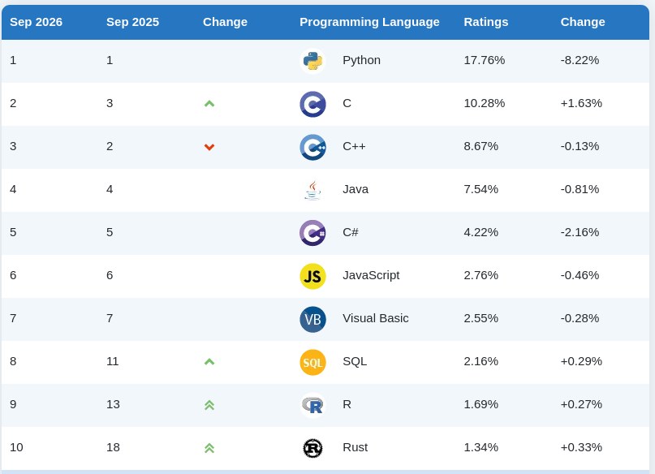
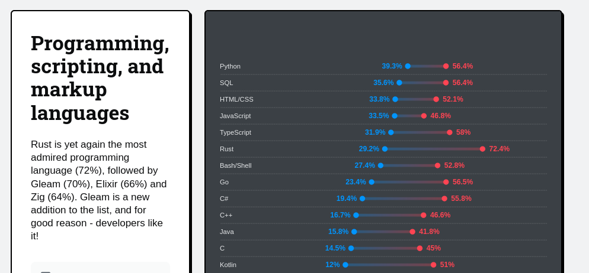

The future Qt language bridging technology
Cristián Maureira-Fredes
maureira.dev
@cmaureir


The future of Qt is to be
a language independent framework
C++ has been the most popular
way to write Qt code
C++ has been the most popular
way to write Qt code
But Python's popularity cannot be neglected
- Qt for Python (PySide) is the official binding; maintained by The Qt Company and released on Qt's own cycle
- PyQt is still very popular; maintained by Riverbank Computing.
- Already in KDE: Python + QML + Kirigami as a supported way to build an app.

Note: None of what follows replaces this. Qt for Python gives you all of Qt.
And it's not alone
- wiki.qt.io/Language_Bindings lists 25+ projects across some fifteen languages
- Several are genuinely alive - QtJambi for Java/Kotlin
- Rust alone has six on that page:
CXX-Qt, Rust-Qt, qmetaobject-rs, qtrs, qml-rust, qmlrs
Why this might not always work?
- Mirror bindings tend to be incomplete, or outdated
- there need to be a language "adaption" on Qt/C++ details
- forcing a language to do unnatural things
Additional motivations
- New developers already fluent in other languages
- Qt Quick is a great UI layer: the logic does not have to be C++
- Lowering the barrier grows the Qt and KDE contributor pool
- Opportunity to go to new communities
So should we add
another mirror binding?
Qt Bridges is explicitly not “another mirror binding”
- A binding mirrors Qt's C++ API into your language, class by class, and then has to keep mirroring it, forever
- A bridge turns the problem around: QML owns the UI, your language owns the logic
It does not aim to support every Qt use case. That is the design, not a gap.
Changing the maintenance story
A binding
- Surface to maintain = the size of Qt
- Every new Qt class, enum and overload is more work owed
- Fall behind once and the gap only widens
- This is precisely how Qyoto, Kimono and many others died
A bridge
- Surface to maintain = the meta-object boundary: properties, slots, signals, models
- That boundary is small, and it has been stable for decades
- Qt grows; the bridge does not have to
- You get Qt Quick (and Kirigami) for free!
Summary: How a bridge works
- Keep your logic, data and models in your language; Qt Quick drives the UI
- Each bridge connects your types, properties and methods to QML using that language's own attributes or conventions
- You do not adopt a new idiom to get a UI - the Rust stays Rust, the C# stays C#
- No hand-written C++ glue, no
moc, no binding layer to keep alive
But which languages?
Most used languages

Source TIOBE index, September 2026
Most admired/desired languages

The numbers that matter here
Rust
- 72.4% admired - the most admired language, again
- Only 29.2% have used it - a large wants-to gap
- In the Linux kernel, Android and Windows
C#
- #5 on TIOBE at 4.22% - ahead of JavaScript
- 55.8% admired, 19.4% desired
- Huge desktop, enterprise and tooling install base
Sources: TIOBE Sep 2026; Stack Overflow Survey 2025
One front end, many back ends

Why Rust?
- Performance
- Fast and memory efficient: no runtime, no GC
- Reliability
- Ownership model rules out data races and use-after-free at compile time
- Productivity
- One toolchain:
cargobuilds, tests, documents and publishes
- One toolchain:
fn main() {
println!("Hello, Qt!");
}
$ cargo run
Hello, Qt!
C++ and Rust, side by side
class Person {
public:
Person(std::string n, int a)
: name(std::move(n)), age(a) {}
void talk() const {
std::cout << name
<< " says Hello!\n";
}
private:
std::string name;
int age;
};
int main() {
Person maria("Maria", 22);
maria.talk();
}
struct Person {
name: String,
age: i32,
}
impl Person {
fn talk(&self) {
println!("{} says Hello!", self.name);
}
}
fn main() {
let maria = Person {
name: "Maria".into(),
age: 22,
};
maria.talk();
}
Getting the Rust bridge
- Rust & Cargo ≥ 1.88
- Qt 6.10 or newer, with
qmakeonPATH - A C++ toolchain (due to CXX dependency)
- Linux x86_64, Windows x64, macOS arm64 (experimental)
One crate, all of the public API:
# Cargo.toml
[dependencies]
qtbridge = "*"
$ cd path/to/code
$ cargo run
A button that says Hello, Qt!
// main.rs
use qtbridge::{QApp, qobject};
#[derive(Default)]
pub struct Backend {}
#[qobject(Singleton)]
impl Backend {
#[qslot]
fn say_hello(&self) {
println!("Hello, Qt!")
}
}
fn main() {
QApp::new()
.register::<Backend>()
.load_qml(include_bytes!("Main.qml"))
.run();
}
// Main.qml
import QtQuick
import QtQuick.Controls
import hello_world
ApplicationWindow {
visible: true
title: qsTr("Minimal QML app")
Button {
anchors.centerIn: parent
text: "Hello, Qt!"
onClicked: Backend.say_hello()
}
}
Demo
Why this matters for KDE
- There is already some interest: kfbridge-prototypes
- It mirrors the Qt Bridges layout:
kf-genis the codegen that buildskf-type-lib kf-typesis a parallel attempt at hand-rolled bindings- A branch is headed upstream on KDE Invent once it works
- Rusty already
ki18nis up and running- Enough that
cxx-kde-frameworksis expected to move over to it
Where this fits in KDE
Natural fit
- The bridge is QML-only by design - which is exactly how Kirigami apps and Plasma applets are already built: QML UI, logic behind it
- KDE already documents a “Kirigami with Rust” path - the bridge is a new engine under a road that exists
- There is precedent: Angelfish ships Rust today in its ad blocker
- New apps and applets, not ports
tokioworks (see thehost_monitorexample) - monitors, indexers and backup tools can do real background work without stalling the UI- The
serde_jsonfeature hands JSON straight to QML
Not the tool for
- Qt Widgets apps - not supported; most of KDE's long-lived applications are Widgets
- Qt modules that only ship a C++ API
- Anything needing to mix Rust and C++ in one target - that is CXX-Qt's job today
Akademy has asked this before
- 2017 - Emma: Rust support in KDevelop
- 2020 - Méven: Rust in KDE
- 2023 - Tobias Hunger: A UI in Rust & Slint
- 2024 - Joshua Goins: C++, Rust and Qt: Easier than you think
- 2025 - Nicolas Fella: Language Bindings: The Future of KDE?
- 2026 - and now Qt itself turns up with an answer
The Rust + Qt* landscape
| CXX-Qt | Slint | Qt Bridge | |
|---|---|---|---|
| UI language | QML | own .slint DSL | QML |
| Renderer | Qt Quick | its own | Qt Quick |
| Kirigami / KDE Frameworks | yes | no | yes |
| Qt Widgets | yes | - | no |
| Drop into an existing Qt app | yes, that is the point | no | not yet |
| Build | CMake + Corrosion | cargo | cargo |
| Maintained by | KDAB | Slint GmbH | The Qt Company |
More fun at Are we GUI yet?
So why not just CXX-Qt?
- They solve different problems
- CXX-Qt is for adding Rust into an app that already exists
- The Qt Bridge is for a new generation of applications
“make my C++ app safer”
vs
“let me build a KDE app without leaving Rust”
Code comparison
CXX-Qt
#[cxx_qt::bridge]
pub mod qobject {
unsafe extern "RustQt" {
#[qobject]
#[qml_element]
#[qproperty(i32, number)]
type MyObject = super::MyObjectRust;
}
}
Plus CMake, plus Corrosion, to wire Cargo into the build.
Qt Bridge
#[derive(Default)]
pub struct MyObject {
number: i32,
}
#[qtbridge::qobject]
impl MyObject {
qproperty!("number", Member = number,
Notify = number_changed);
#[qsignal]
fn number_changed(&mut self);
}
Plus nothing. cargo run.
The CXX-Qt & Qt Bridges convergence
- Both build on CXX - the same foundation underneath
- KDE's Rust work so far went through
cxx-kde-frameworks(CXX-Qt based); the prototype is moving to the bridge - Meanwhile
qtbridge-rusthas CXX-Qt interoperability (qt build tools + types) - KDE does not have to pick a winner, but it does get to influence where they meet
Rust - in summary
- QML for the UI, safe Rust for the logic, no C++ written by hand
- One dependency (
qtbridge) and some attribute macros to learn - KDE Frameworks bindings are already in prototype
- Need C++ interop or Qt Widgets today? Use CXX-Qt instead
Why C#?
- Reach
- #5 on TIOBE; desktop, web, cloud, tooling and games
- Managed and productive
- GC, LINQ,
async/await, properties, a vast standard library
- GC, LINQ,
- Familiar patterns
- MVVM and data binding developers already use in WPF
Console.WriteLine("Hello, Qt!");
$ dotnet run
Hello, Qt!
C++ and C#, side by side
class Person {
public:
Person(std::string n, int a)
: name(std::move(n)), age(a) {}
void talk() const {
std::cout << name
<< " says Hello!\n";
}
private:
std::string name;
int age;
};
int main() {
Person maria("Maria", 22);
maria.talk();
}
public class Person(string name, int age)
{
public string Name { get; } = name;
public int Age { get; } = age;
public void Talk() =>
Console.WriteLine($"{Name} says Hello!");
}
public class Program
{
static void Main()
{
var maria = new Person("Maria", 22);
maria.Talk();
}
}
Getting the C# bridge
- .NET SDK 8+
- CMake and Ninja on
PATH - A C++ toolchain
- A Qt 6 install (Linux points
QtDirat it; Windows can use the bundled runtime)
You never write the CMake or the C++ yourself.
From a template:
$ dotnet new install QtGroup.Qt.Bridge.CSharp.Templates
$ dotnet new qt -n MyQtApp && cd MyQtApp
$ dotnet build -p:QtDir=/path/to/qt
$ dotnet run
Or into an existing project:
$ dotnet add package QtGroup.Qt.Bridge.CSharp.linux-x64A button that says Hello, Qt!
Backend.cs / Program.cs
using Qt.Quick;
public class Backend
{
public void SayHello() =>
Console.WriteLine("Hello, Qt!");
}
internal class Program
{
static void Main(string[] args)
{
Qml.LoadFromRootModule("MainWindow");
Qml.WaitForExit();
}
}
MainWindow.qml
import QtQuick
import QtQuick.Controls
ApplicationWindow {
visible: true
title: "Minimal QML app"
Backend { id: backend }
Button {
anchors.centerIn: parent
text: "Hello, Qt!"
onClicked: backend.sayHello()
}
}
No attributes needed - public types are exposed by default,
PascalCase becoming camelCase in QML.
[Qt.Ignore] and [Qt.Include] fine-tune it.
Demo
Why this matters for KDE
- dotnet wants to have a presence on Linux
- No current KDE C# effort
- It is the lowest-friction bridge: plain public classes are exposed automatically, so there is no macro or annotation vocabulary to learn first
- C# developers already know MVVM and data binding
-
INotifyPropertyChangeddrives a QML binding the same way it drives XAML - This is a recruiting play more than a porting one: the Windows desktop world is full of people who have never had a reason to try Qt - and KDE already ships to them
KDE is already on Windows
The funnel exists
- Krita, Kdenlive, digiKam, Okular, Kate, KDE Connect - all in the
Microsoft Store, built by
Craftand the binary factory - Those users are the same population as the C# developers
- Today that funnel runs one way: they can install a KDE app, but not hack on it without first learning C++ and CMake
And it fits the bridge
- Windows x64 + Linux x64 are contained in the KDE's shipping matrix for those apps
- The .NET runtime is a distro question on Linux; on Windows,
Craftalready bundles everything - Windows integration - notifications, taskbar, shell, WinRT - is painful from C++ and native from C#
“come learn our stack” becomes “the app you already run, in the language you already write”.
What a KDE C# effort would face
In its favour
- List-heavy KDE UIs map onto
ListModel<T>andTableModel<T>directly - Existing .NET code can be brought along; the bridge is added to a project, not built around
- The KDE-on-Windows apps are already a Windows + Linux x64 story, so the platform gap does not bite them
Against
- Windows and Linux x64 only - no macOS, no ARM
- Teaching
Craftabout .NET is new work for the team - Workflow depending on a Qt installation (so far!)
- A .NET runtime dependency is a real packaging question for distros
C# - in summary
- QML for the UI, ordinary C# for the logic - plain classes, no glue
dotnet new qtand you have a running app- Models via
ListModel<T>,TableModel<T>or anObservableCollection - Windows and Linux x64 today; 0.3 pre-release
KDE has been here before
The C# attempts
- Qyoto and Kimono - SMOKE-based bindings on Mono, covering Qt and KDE. Both discontinued.
- QtSharp - KDE's own wiki still calls it “in active development”… and was last touched in November 2022
Why they died
- Every one was a hand-maintained binding layer, downstream of Qt and volunteer-staffed
- Qt moved, the bindings did not, and the gap only ever widened
The difference now: the bridge is generated, and it is maintained upstream, by Qt, as part of Qt.
Before KDE bets on either
- Licensing shouldn't be a problem since it follows Qt framework one.
- Qt 6.10+ for the Rust bridge - ahead of what most distributions ship today, and ahead of KDE's own baseline
- Pre-release. Type names, macros and model base classes are all still expected to change
- A Rust gotcha: bridge objects live in
Rc<RefCell<_>>, so an interrupted call chain can panic on a borrow conflict rather than fail at compile time
What we would like from you
- Try a bridge on something small and real
- Tell us which Qt and KF types you reach for first
- Help unblock the KDE Frameworks prototype
- File the papercuts while the API can still move
The future Qt language bridging technology
Dr. Cristián Maureira-Fredes
@cmaureir
qt.io/qt-bridges